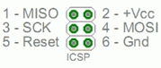
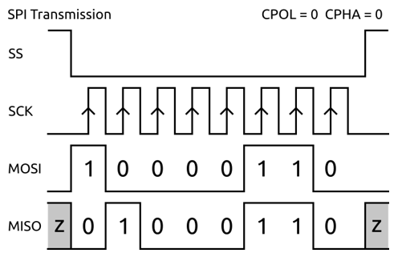
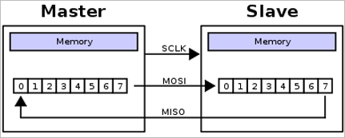
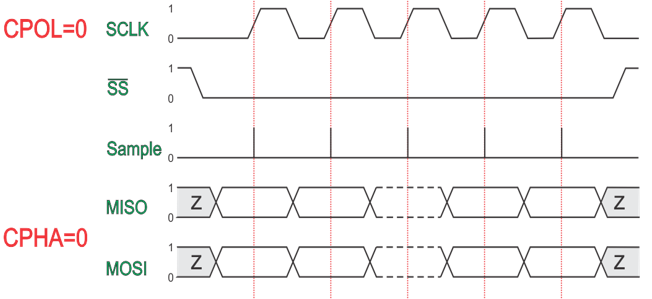
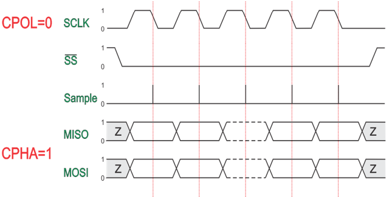
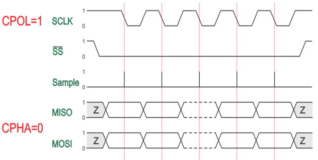
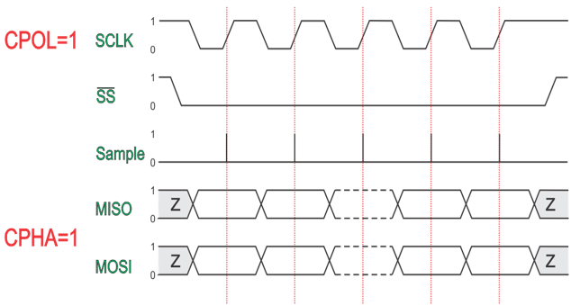

SPI, or Serial Peripheral Interface, is a synchronous, full duplex serial communication protocol between high-speed devices over short distances. The SPI protocol supports a single master with one or more slaves. The master can communicate to any slave on the bus, but each slave can communicate only with the master.
The SPI Master Transfer block in the support package library enables communication with other SPI devices. You can use this block only when you use your hardware as the master device.
With SPI, you can:
Connect various sensors to boards to measure different quantities such as temperature, pressure.
Connect various shields to boards to enhance capabilities such as WiFi shield.
Access an SD card to store data or extend the available memory.
You can set SPI properties such as the SPI clock out frequency (in MHz), SPI mode, and the Bit order in the Configuration Parameters > Hardware Implementation > SPI properties section.
SPI uses a four-wire serial bus for communication: MISO, MOSI, SCK, and SS. The MISO, MOSI, and the SCK lines are common to all devices. The SS line is specific to each slave.
MISO (Master In Slave Out) – This line is the slave line for sending data to the SPI master.
MOSI (Master Out Slave In) – This line is the master line for sending data to the SPI peripherals.
SCK (Serial Clock) –The master generates the clock pulses that synchronize the data transmission.
SS (Slave Select) – This is specific to the device. This is the pin on each device that the SPI master can use to enable and disable the device. This signal is an ‘active low’ signal which means a device becomes a slave when its SS pin is set to low.
The SPI lines over In Circuit Serial Programming (ICSP) header are consistent across all the boards shown as follows.

The SPI master sets the clock with a frequency supported by the SPI slave with which the master wants to communicate.
The master selects the slave by setting the SS pin of slave to low (0). The master can select only one slave at a time.
As each SPI transfer is a full duplex transmission, the master sends a bit on MOSI line and the slave reads it. The slave also sends a bit on the MISO line and the master reads it.
When the master makes a data transfer, the slave cannot opt out of sending data. However, the slave device sends dummy bytes (usually all 1s or all 0s) when communication is one-way. Similarly, when the master reads data from a slave, the slave knows to ignore the data that the master sends.
When the transfer is complete, the master stops toggling the SCK and mostly pulls up the SS to deselect the slave.
During the data transmission, the other slaves on the SPI bus that have not been selected by the master ignore the SCK and the MOSI signals, and do not drive the MISO.


An SPI master sets the clock polarity and the clock phase.
Clock Polarity (CPOL) – is the default value (HIGH/LOW) of SCK signal when the bus is idle.
CPOL = 0 means a default LOW value of SCK when bus is idle. CPOL = 1 means default HIGH value of SCK when bus is idle.
Clock Phase (CPHA) – indicates, if the clock data is sampled at LEADING (first) or TRAILING (second) edge of SCK.
CPHA = 0 means sample at LEADING edge of SCK and CPHA = 1 means sample at TRAILING edge of SCK, regardless of whether the clock edge is RISING or FALLING.
The combination of polarity and phase are referred to as SPI modes. The SPI modes 0–3 are shown in the table.
| Mode | Clock Polarity (CPOL) | Clock Phase (CPHA) |
|---|---|---|
| 0 | 0 | 1 |
| 1 | 0 | 0 |
| 2 | 1 | 1 |
| 3 | 1 | 0 |
Mode 0

Mode 1

Mode 2

Mode 3
